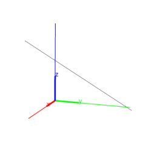
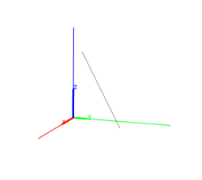
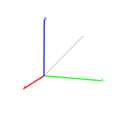

13.5.1 Lines and directed lines in space: line
See section 12.7.1 for lines in the plane.
The line command returns and draws a directed line given one of the
following types of arguments:
-
Two points or a list of two points.
The direction of the line is from the first point
to the second point.
Input:
line([0,3,0],point(3,0,3))
Output:

- A point and direction vector (in the form
[u1,u2,u3]).
The direction of the line is given by the direction vector.
Input:
line([0,3,0],[3,0,3])
Output:

- Two equations for planes.
The direction of the line is given by the cross-product of the
normals for the planes. For example, the intersection of the planes
x=y (normal (1,−1,0)) and y=z (normal (0,1,−1)) will be
(1,−1,0)× (0,1,−1) = (1,1,1).
Input:
line(x=y, y=z)
Output:
